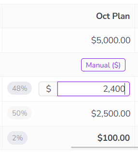
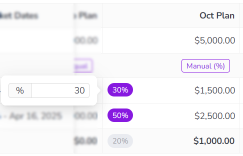
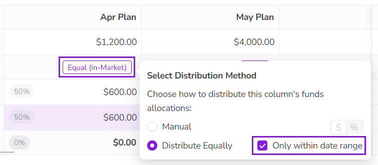

Set how funds are distributed to connected activities
When you connect a single activity to an investment in Uptempo, all the investment's funds are simply allocated to that activity. If you connect more than one activity to an investment, you can choose how you want funds allocations to be distributed between these activities.
Overview of allocation distribution methods
You can either let Uptempo handle setting allocations with automatic distribution, or you can set allocations yourself with manual distribution. In both cases, you can choose between several options for how you want funds allocation to work.
Automatic distribution
Automatic distribution is the default distribution method. Whenever you connect more than one activity to an investment, the system automatically distributes the available funds by allocating an equal share to each connected activity.
The following options are available for automatic distribution:
Distribute Equally
The default method that is applied whenever more than one activity is connected to an investment. This method automatically allocates an equal share of the investment funds to each connected activity: if two activities are connected, each receives one half of the funds; if three activities are connected, each receives one third of the funds, and so on.
An additional setting that's available for the Distribute Equally method. Use this setting if you want Uptempo to only automatically allocate funds to activities if they are in-market during the date range that the investment amount represents.
This method automatically allocates the investment funds in the same proportions as the existing allocations in a designated reference column. For example, if an investment is split 70/30 between two connected activities in the reference column, the system will allocate funds to these activities in the same 70/30 split in columns that are configured to use that reference column for Auto Distribution.
If you want to specify exactly how an investment's funds should be distributed between the connected activities, you can use the manual distribution method to set funds allocations by hand.
There are two options available for manual distribution:
Set as amount
Set each connected activity's allocation by entering an exact currency amount.
Set as percentage
Set each connected activity's allocation by entering it as a percentage of the total investment amount.
In general, use manual distribution methods in cases where precise allocation amounts are important, and automatic distribution methods in cases where precise amounts are less important.
Distribute Equally is the least precise distribution method available, but also requires no manual effort. This method is useful when the exact allocation amounts are less important than tracking whether funds have been allocated.
Recommended for: Plan budget columns.
Distribute Equally (only within date range) also requires no manual effort, but offers greater precision if your organization recognizes and tracks activity spend in relation to when activities are in-market.
Recommended for: Expected budget columns.
Auto Distribution is the most precise automatic distribution method, because it's usually based on manually set allocations. It's useful when a budget column is expected to have very similar allocations to another column, but where the line item amount may be different.
Recommended for: Committed and Actuals budget columns.
Set as percentage is the less precise of the manual distribution options. But it's also significantly faster (and requires less manual effort), because the system automatically calculates and allocates the correct currency amounts for you.
Recommended for: Expected budget columns (if you need more precision than automatic distribution).
Set as amount gives you the most precise control, but also requires the most manual effort.
Recommended for: Exceptions, when recording exact amounts is a priority.
Change how an investment's funds are allocated
When you connect multiple activities to an investment, Uptempo will automatically distribute the investment's funds equally between all connected activities. If you want to adjust these allocations, you can use the Activity Funding Panel.
In the Activity Funding Panel, you can switch between the available distribution methods, and you can set funds allocation amounts if you select a manual distribution method.
Change the allocation distribution method for an investment line item
You can use an investment line item's Activity Funding Panel to view its current funds allocations, and to change the distribution method or adjust the allocations for each connected activity.
Change the allocation distribution method
Click Investments in the sidebar navigation menu to view the investment hierarchy.
Click Open Panel on the investment line item for which you want to change the allocation distribution method.
The investment line item's details panel opens.
In the details panel, click the Activities tab to view connected activities, then click Open Activity Funding Panel.
The investment line item's Activity Funding Panel opens:
Optional: Use the View menu to select the view that displays the budget columns you want to work with.
Find the budget column for which you want to adjust the distribution method. Click the button on that column's Activities row to open the Select Distribution Method panel:
In the Select Distribution Method panel, choose the distribution method you want to use for the selected column. You can choose between the following methods:
Manual
Manually set funds allocations for all connected activities.
Optional: Use the $ / % toggle switch to change the method for entering allocations:
$ (default): Enter allocations as exact currency amounts.
%: Enter allocations as percentage shares of the line item amount.
Let the system automatically distribute funds equally between all connected activities.
Optional: Select the option Only within date range if you want to limit funds allocations to only activities that are relevant to the column's date range.
After selecting the distribution method, click anywhere outside the Select Distribution Method panel to close it.
Optional: Repeat steps 3-5 for any other budget columns on which you want to change the distribution method.
Click Save to save and apply your changes. If you set the Manual distribution method for any column(s), this will also save your manually set allocation amounts.
Your changes are saved, and take effect immediately. To exit the Activity Funding Panel for the selected investment line item, click Close.
Manually set allocation amounts for connected activities
If you want to set allocation amounts for connected activities yourself, you can use the Manual distribution method.
Manually set funds allocations
On the column where you want to manually set funds allocations, set the distribution method to Manual. Select either the Set as amount($) or Set as percentage (%) option, depending on your preference.
Click anywhere outside the Select Distribution Method panel to close it.
Use the column's table cells to adjust funds allocations for the connected activities. To edit an allocation, click anywhere in the table cell that displays the funds allocation you want to change:
If you selected Set as amount: Enter the currency amount to allocate to the activity into the field. The percentage indicator in the table cell instantly updates to reflect the share of the line item amount that the new allocation amount represents. 
If you selected Set as percentage: Enter the percentage share of the line item amount to allocate to the activity into the field. The currency amount in the table cell instantly updates to reflect the actual funds allocation that the new percentage share represents. 
Press Enter or click anywhere outside the cell to apply the new allocation.
Repeat steps 3 and 4 for any other allocations you want to adjust.
Click Save to finish adjusting the investment's allocations.
Your changes are saved, and take effect immediately. To exit the Activity Funding Panel for the selected investment line item, click Close.
Automatically distribute funds only to in-market activities
By default, the Distribute Equally method allocates funds to all connected activities, even if they are not in-market for the time period that a budget column represents.
To make these automatic allocations reflect how and when activities need to be funded more accurately, you can configure the Distribute Equally method so that it only allocates funds to an activity if the activity's in-market dates overlap with the column's date range.
Example
The budget column November Plan has a date range of November 1 - 30, 2026. The investment line item In-Person Events has four connected activities, with the following in-market dates:
Annual User Conference: May 14 - 16, 2026
Regional Roadshow Event Denver: August 18, 2026
Regional Roadshow Event Vancouver: November 5, 2026
Fall Trade Show Booth: November 30 - December 3, 2026
By default, all four connected activities are allocated an equal one-quarter (25%) share of the funds in the November Plan column. However, only two of the four activities have in-market dates that fall entirely or partly within the time period of November Plan: Regional Roadshow Event Vancouver (Nov 5) and Fall Trade Show Booth (Nov 30 - Dec 3).
If you turn on the option to only allocate funds within the November Plan column's date range, the system automatically allocates an equal one-half (50%) share to only these two activities. It allocates no funds (0%) to the other two activities, as they are not relevant to the column's date range.
Auto-distribute only to in-market activities
On the column where you want to enable automatic distribution only for in-market activities, set the distribution method to Distribute Equally, and select the option Only within date range: 
Click anywhere outside the Select Distribution Method panel to close it. The table data refreshes, and the column's funds allocations are updated so that the line item funds are only distributed between activities that are in-market in the column's date range:
Click Save to finish adjusting the investment's allocations.
Your changes are saved, and take effect immediately. To exit the Activity Funding Panel for the selected investment line item, click Close.
{kind=link}
{kind=link}
{kind=link}
{kind=link}
{kind=link}
{kind=link}